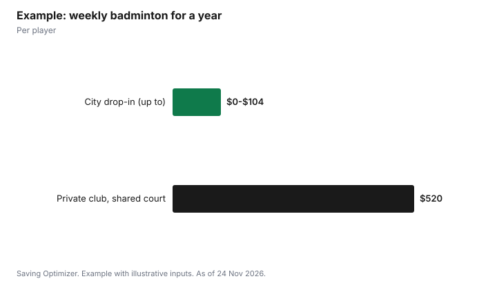

Sports · Canada
Badminton and Squash Court Costs: A Canadian Cost Guide

Badminton and squash can be cheap if you start with city drop-in programs. Many community centres run drop-in badminton, and Toronto offers free drop-in programs at many centres. Private badminton clubs charge per court hour or by membership, and squash usually needs a club or university membership. Gear is a racquet, non-marking court shoes, shuttles or balls, and eye protection for squash.
Key takeaways
- Start with city drop-in badminton; many programs are free or low-cost. Check your city's schedule.
- Private badminton clubs charge per court hour; splitting a court four ways for doubles lowers the cost.
- Squash usually needs a club, YMCA or university membership.
- Use non-marking court shoes and, for squash, protective eyewear.
- Example: a year of weekly badminton costs $0 to $100 at city drop-in, or about $520 at a private club.
Where to play
| Option | How it's priced | Best for |
|---|---|---|
| City drop-in | Free or per visit | Casual players |
| Private badminton club | Per court hour or membership | Regular doubles groups |
| Squash club | Membership | Regular squash players |
| University or YMCA | Membership or day pass | Students and members |
Gear
- Racquet: start with a basic one; upgrade later.
- Non-marking court shoes for grip and to protect floors.
- Shuttles for badminton, balls for squash.
- Protective eyewear for squash.
- Buy used racquets from players upgrading.
Plan: an example
These are example prices, not quotes. Weekly doubles badminton for a year. City drop-in: free or an example $2 a visit, $0 to $104. Private club: an example $40 court hour split four ways, $10 each, 52 weeks = $520.

For other racquet sports, see pickleball costs and indoor tennis in winter. Fee assistance is in city recreation passes and assistance.
Sources
- City of Toronto, Free and lower-cost recreation options (free drop-in programs and free centres), checked 24 Nov 2026.
Frequently asked questions
How much does it cost to play badminton in Canada?
City drop-in badminton is often free or low-cost. Private clubs charge per court hour or by membership.
Is squash expensive to play?
Squash usually needs a club, YMCA or university membership, so it often costs more than drop-in badminton.
Do I need special shoes?
Non-marking court shoes are usually required and give better grip.
Do I need eye protection for squash?
Protective eyewear is strongly recommended and often required by clubs.
How can I play badminton for less?
Use city drop-in, split court rentals for doubles, and buy used racquets.
Researched and drafted with AI assistance and fact-checked against official Canadian sources. How we create content.
Note: Prices are examples. Check your city's schedule and club rates. Education only.